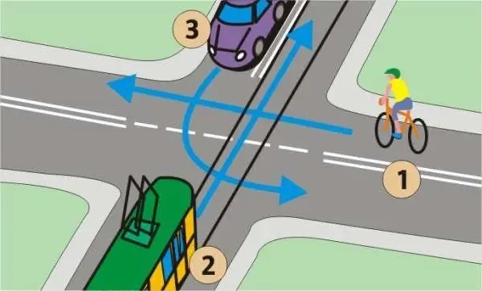

Zasada prawej ręki wskazówki do nauki jazdy

Jak prawidłowo zachować się na skrzyżowaniu? – poradnik dla osób uczących się jazdy samochodem
Jeśli zaczynasz naukę i chcesz zdać egzamin państwowy na prawo jazdy kat. B, zrozumienie zasady pierwszeństwa przejazdu na skrzyżowaniach równorzędnych to absolutna podstawa. To właśnie w tym miejscu najczęściej popełniane są błędy na kursach i egzaminach na prawo jazdy. Dlatego dziś, w sposób prosty i praktyczny, opisujemy art. 25 Prawa o Ruchu Drogowym mówiący o przecinaniu się kierunków ruch.
Link do Ustawy Prawo o ruchu Drogowym (Dz.U. 1997 nr 98 poz. 602) -> patrz Art 25 str. 37
https://isap.sejm.gov.pl/isap.nsf/download.xsp/WDU19970980602/U/D19970602Lj.pdf
Pierwszeństwo na skrzyżowaniu – fundamentem nauki jazdy
Osoby, które rozpoczynają kurs prawa jazdy, szybko przekonują się, jak ważna jest zasada prawej ręki i Art. 25 Ustawy Prawo o ruchu Drogowym, który jasno wskazuje, że:
➡️ kierujący musi ustąpić pierwszeństwa pojazdowi nadjeżdżającemu z prawej strony.
To kluczowe na skrzyżowaniach równorzędnych, których w Gdańsku nie brakuje — szczególnie na osiedlach, w strefach zamieszkania i na drogach lokalnych.
Jeśli skręcasz w lewo, obowiązuje dodatkowa zasada:
➡️ ustąp pojazdom jadącym z przeciwka, niezależnie od tego, czy jadą prosto, czy skręcają w prawo.
To częsty powód oblania egzaminu, dlatego w trakcie zajęć praktycznych instruktorzy OSK Tailor poświęcają temu dużo uwagi.
Pojazdy szynowe mają pierwszeństwo
Art. 25 ust. 2 przypomina, że zasady pierwszeństwa, na skrzyżowaniach różnorzędnych, nie dotyczą pojazdów szynowych.
Oznacza to, że tramwaj, na skrzyżowaniu równorzędnym, ma pierwszeństwo zawsze, niezależnie od strony, z której nadjeżdża.
W Gdańsku tramwajów jest wiele, dlatego dla każdego kursanta uczącego się jazdy w Gdańsk zrozumienie tej zasady jest niezbędne. Błąd w tej sytuacji może zakończyć się nie tylko punktem karnym, ale i zagrożeniem bezpieczeństwa.
Zasady prawej ręki obowiązują nie tylko na skrzyżowaniach
Przepisy Art. 25 stosuje się także wtedy, gdy drogi przecinają się poza skrzyżowaniem.
Czego absolutnie nie wolno robić na skrzyżowaniu
Ustawa wymienia też dwa jasno określone zakazy:
1. Nie wolno wjechać na skrzyżowanie, jeśli nie ma możliwości jego opuszczenia.
Nawet zielone światło nie uprawnia do wjechania na skrzyżowanie, jeżeli zator za nim uniemożliwia przejazd. Ten błąd często można zobaczyć w godzinach szczytu w centrum Gdańska.
2. Kierowcy nie mogą rozdzielać kolumny pieszych.
To szczególnie istotne w miejscach, gdzie pojawiają się grupy zorganizowane np. pielgrzymki.
Podsumowanie: Dlaczego rozumienie zachowania na skrzyżowaniach równorzędnych jest tak ważne
Dla każdego, kto rozpoczyna naukę jazdy, opanowanie zasad z Art. 25 jest fundamentem bezpiecznego poruszania się po drogach. Zrozumienie pierwszeństwa ruchu, szczególnie w kontekście skrzyżowań równorzędnych, znacząco zwiększa szanse na zdanie egzaminu za pierwszym razem.
Mamy nadzeję, że po przeczytaniu naszego wpisu, umiesz prawidłowo wskazać pierwszeństwo przejazdu.

Poprzedni art. https://osktailor.pl/pierwsza-pomoc-w-szkole-nauki-jazdy-osk-tailor/
Zespół OSK Tailor Nauka Jazdy Gdańsk